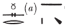

Esna II, 112
- Location: Intercolumnar E
- Date: Domitian
- Hieroglyphic Text
- Bibliography: None
Formula
1 ỉȝw n=k
pȝ bȝ ʿȝ-ỉrw
wr-nrw štȝ-2ms.w
nṯr wʿ ḫpr m ḥḥ(.w)
qmȝ nty nb ḫpr=f
pȝ bȝ ʿȝ-ỉrw
wr-nrw štȝ-2ms.w
nṯr wʿ ḫpr m ḥḥ(.w)
qmȝ nty nb ḫpr=f
1 Greetings to you,
o Ba, great of form,
great of fear, remote 2 of appearance,
sole god who transformed into millions,
who created all that is when he came about.
o Ba, great of form,
great of fear, remote 2 of appearance,
sole god who transformed into millions,
who created all that is when he came about.
The King
3 nsw.t-bỉty
(wytqrtr ksrs)|
4 zȝ-Rʿ
(twm[t]yns ḫwỉ)|
(wytqrtr ksrs)|
4 zȝ-Rʿ
(twm[t]yns ḫwỉ)|
3 King of Upper and Lower Egypt,
Autokrator Caesar,
4 Son of Re,
Domitian, Augustus
Autokrator Caesar,
4 Son of Re,
Domitian, Augustus
Nekhbet (vulture)
5 Nḫb.t ỉr.t wnm.t n 6 Itm
7 mry
dỉ(.) ʿnḫ-ḏd-wȝs nb
snb nb
8 ȝw.t-ỉb nb ḥr s.t-ḥr
5 Nekhbet, the right eye of 6 Atum,
7 beloved,
who gives all ʿnḫ-ḏd-wȝs,
all health,
8 all happiness upon the throne of Horus.
7 mry
dỉ(.) ʿnḫ-ḏd-wȝs nb
snb nb
8 ȝw.t-ỉb nb ḥr s.t-ḥr
5 Nekhbet, the right eye of 6 Atum,
7 beloved,
who gives all ʿnḫ-ḏd-wȝs,
all health,
8 all happiness upon the throne of Horus.
Behind the king
9 nṯr nfr ỉr ḥk(nw)[…]
9 The good god, who makes praises […]
9 The good god, who makes praises […]
Ram-headed Crocodile
10 šsr-tȝ ḫpr m 11 zp tpy
šȝʿ Nwn 12 ms pȝwty
ỉs tȝ m Nwn m nn
nḥm s(w) šzp
wn(.w) m kkw
13 ỉwn ḫnt
pr=sn m n.t
kȝ=sn ḏsr
m ẖnmw-[Rʿ] nb tȝ-sn.t
šȝʿ Nwn 12 ms pȝwty
ỉs tȝ m Nwn m nn
nḥm s(w) šzp
wn(.w) m kkw
13 ỉwn ḫnt
pr=sn m n.t
kȝ=sn ḏsr
m ẖnmw-[Rʿ] nb tȝ-sn.t
10 šsr-tȝ(?)27 who came about in the first moment,
who began Nun, who birthed the primeval one,
while the earth was in Nun and inert,
light captured it (earth),
when it had been in darkness.
13 The pillar of wind and the crocodile:
they both emerged from the flood,
their name is sacred
as Khnum-[Re]28, lord of Esna.
who began Nun, who birthed the primeval one,
while the earth was in Nun and inert,
light captured it (earth),
when it had been in darkness.
13 The pillar of wind and the crocodile:
they both emerged from the flood,
their name is sacred
as Khnum-[Re]28, lord of Esna.
Wadjet (cobra)
14 wȝḏy.t ỉr.t ỉȝbt.t n Itm
14 Wadjet, the leftt eye of Atum.
14 Wadjet, the leftt eye of Atum.
0.0.0.1 Behind Wadjet
15 nsw.t-bỉty
swȝš ḥknw n kȝ n pȝwty
ẖnm[…] m […]
15 The King of Upper and Lower Egypt,
who utters praises for the Ka of the Primeval One,
[…]
swȝš ḥknw n kȝ n pȝwty
ẖnm[…] m […]
15 The King of Upper and Lower Egypt,
who utters praises for the Ka of the Primeval One,
[…]
: The reading is not entirely certain, and it is unclear if this is an epithet or a divine name for the ram-headed crocodile. LGG VII, 128a, cites only this example, tentatively translating: “Der das Land erleuchtet.”↩
The element for “Re” is damaged, but Sauneron suggested it might be: . Thus a graphic allusion to Re emerging from the flood, as described in the present text.↩